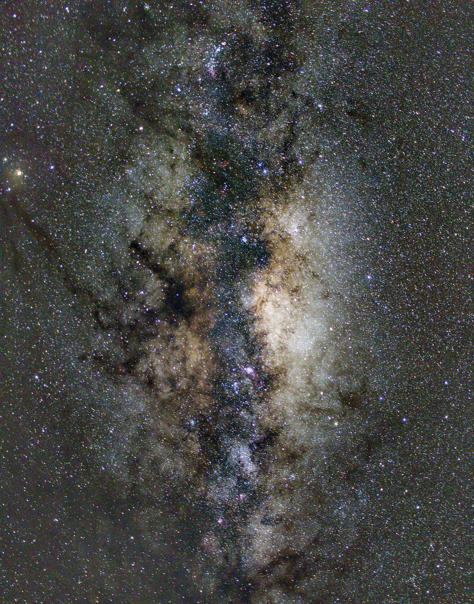

Hi, I'm Luke, an amateur photographer based in South Africa. I've been photographing the beauty of nature wildlife for the past 5 years. I also enjoy astrophotography and still life photography. This website is a collection of some of my favorite shots and of a course a fun project, beacause who doesnt want a website! xD. I hope you enjoy browsing through my work and of course, have a good day :)